Microscopy tells you where things are. This lecture is about the other half of cell biology: what things are, how many cells have them, and what happens if you change them.
After this lecture you can:
Say what cell culture gives you (primary cells, cell lines, organoids) and what it cannot tell you.
Explain how fractionation separates organelles, and how marker proteins show what is in each fraction.
Explain how antibodies are used to detect and pull out one protein (western blot, immunoprecipitation).
Read a flow cytometry dot plot and explain how cells are sorted.
Choose a perturbation (inhibitor, RNAi, CRISPR, overexpression) and the right controls to test whether a protein is needed for a process.
ELO 1: methods used to study cell biological processes.
The question: one protein, four questions
You have found a new protein, X. Immunofluorescence shows it in the cytoplasm.
To understand it, you need four more answers:
Which compartment is it really in? (fractionation)
How much is there, and does the amount change? (western blot)
Which cells in a mixed population have it? (flow cytometry)
Is it needed for anything? (perturbation)
And for all of these you need cells to work on. (cell culture)
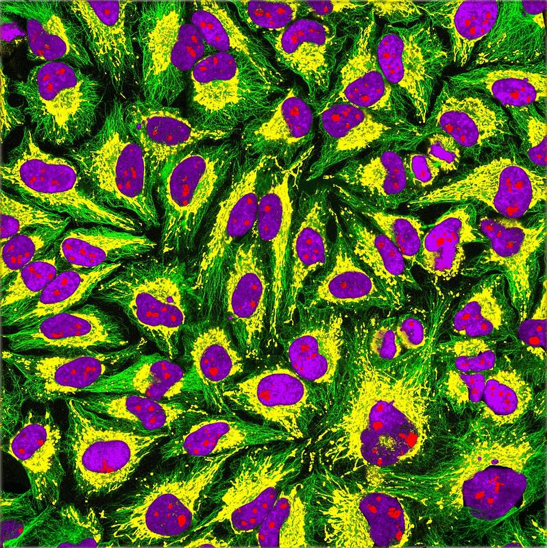
HeLa cells stained with antibodies: microtubules, mitochondria (HSP60), nucleoli (fibrillarin) and DNA.
Cell culture: primary cells and cell lines
Cells are grown in a sterile dish or flask, in a medium with salts, glucose, amino acids and growth factors, at 37 °C.
Primary cells come straight from a tissue. They behave like the tissue, but divide only a limited number of times.
Cell lines divide without limit (they are immortal), usually because they come from a tumour or carry an immortalising gene. HeLa, from the tour of the cell, is the classic example.
Trade-off: cell lines are easy and reproducible; primary cells are closer to the body.
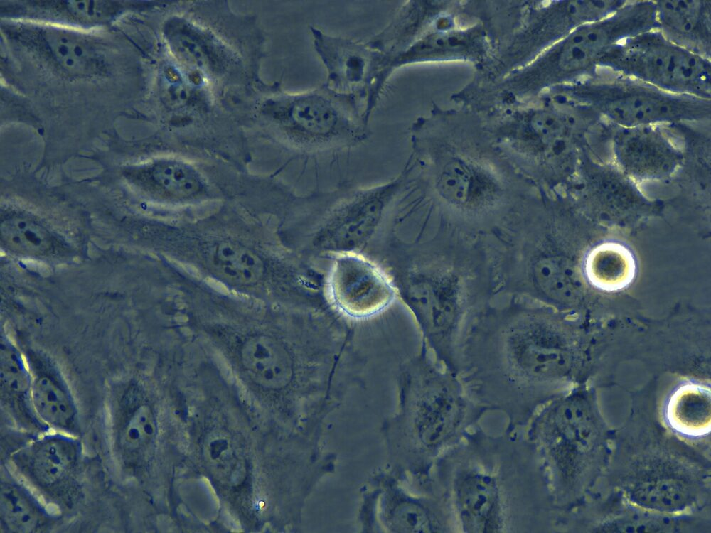
Living HeLa cells in a culture flask (phase contrast).
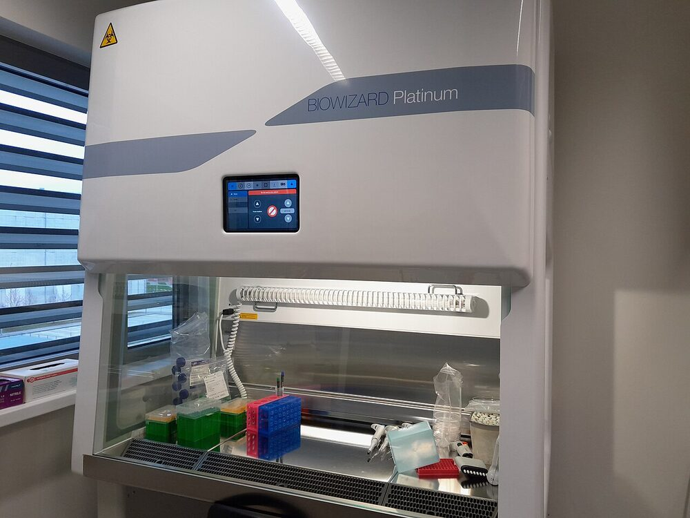
A sterile bench (biosafety cabinet) for cell culture work.
Stem cells, 3D culture and organoids
Cells on flat plastic lose much of their normal shape and behaviour.
3D culture: cells grow in a soft gel that mimics the extracellular matrix.
Organoids: stem cells in a gel organise themselves into a small, simple version of an organ, with several cell types in roughly the right places.
Made from adult stem cells (e.g. gut) or from induced pluripotent stem cells (iPS cells), which can be made from a patient’s skin or blood.
Use: study a patient’s own cells, and test drugs on them.
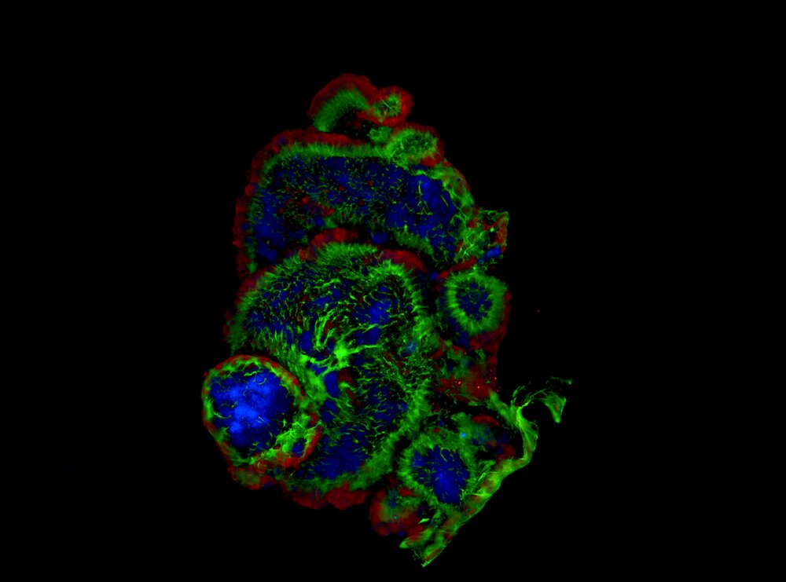
A small-intestine organoid. Green: E-cadherin at cell–cell contacts; red: the signalling protein AKT; blue: nuclei.
Is the culture what you think it is?
Two classic problems, both easy to miss:
Problem
Why it matters
How labs check
Wrong cells (misidentified cell line)
Hundreds of published “cell lines” turned out to be another line, often HeLa. Results are then about the wrong tissue.
DNA fingerprint (STR profile) compared with a reference database
Hidden bacteria (Mycoplasma)
Tiny bacteria without a cell wall. Not visible in the microscope, not killed by common antibiotics; they change the cells’ metabolism and gene expression.
Regular PCR test of the culture
Lesson: a result from cultured cells is only as good as the cells. Good laboratory practice includes checking them.
Taking cells apart: homogenisation and centrifugation
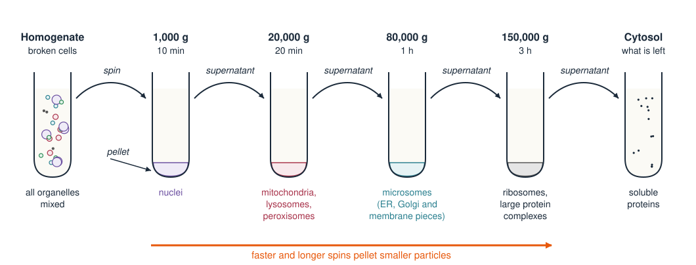
First break the cells gently (homogenisation), so organelles stay intact.
Then spin at increasing speed and time. Large, dense particles pellet first; small ones need stronger force.
Density gradients and marker proteins
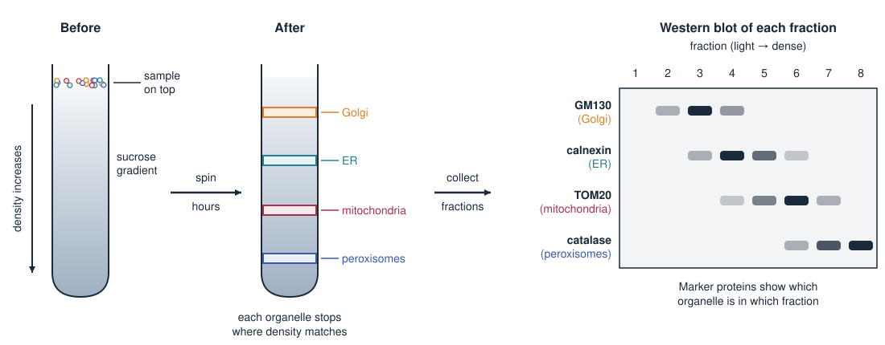
Differential spins give mixtures. For better separation, spin through a gradient (e.g. sucrose): each organelle stops where its density matches.
Which fraction holds which organelle? Use marker proteins known to sit in one organelle only. If protein X runs with the ER marker, X is probably in the ER.
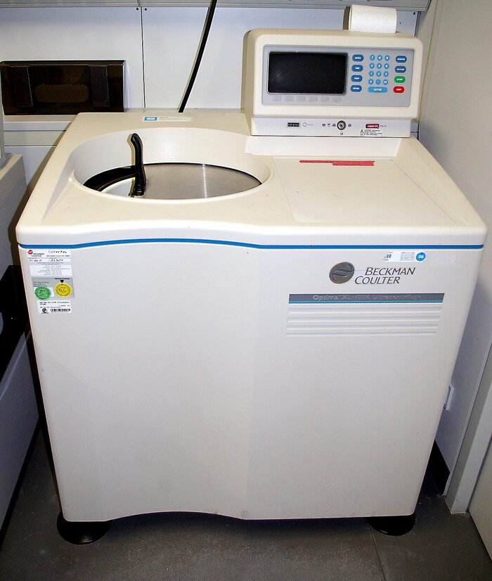
Antibodies as tools
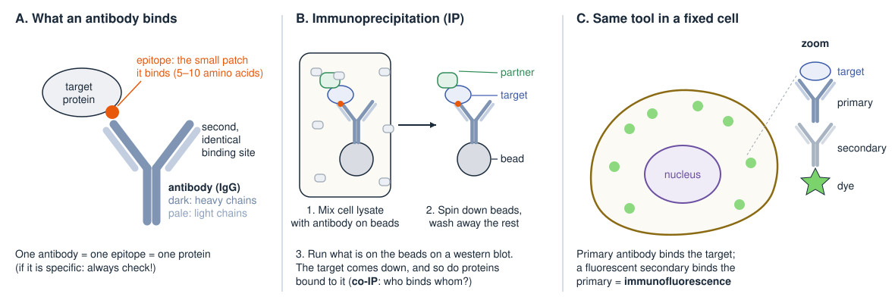
An antibody binds one small patch, the epitope, on one protein. That makes it a tag-free “probe” for a protein.
Immunoprecipitation (IP): antibody on beads pulls the target, and the proteins bound to it, out of a cell lysate.
The same antibody, with a fluorophore, gives the immunofluorescence images from the microscopy lecture.
Western blot: which protein, how much
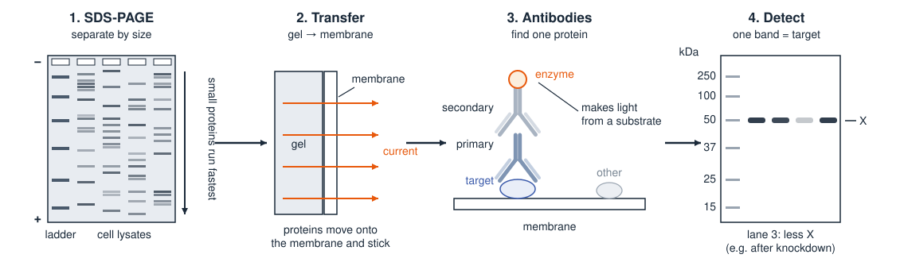
Recap: SDS-PAGE separates proteins by size. Proteins are then transferred to a membrane, and one protein is found with an antibody.
Band position = size (check it!). Band strength = amount, compared between lanes.
Always include a loading control (a protein that should not change).
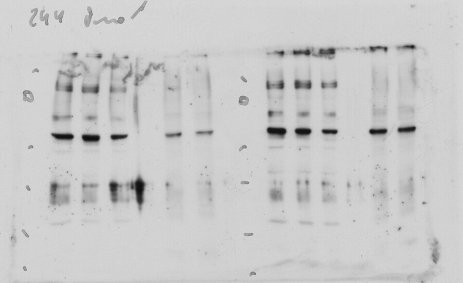
Flow cytometry: measuring thousands of single cells
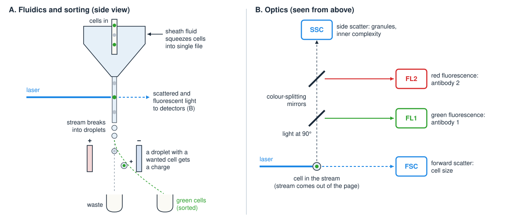
Cells pass a laser one at a time, thousands per second. Scatter gives size (forward) and granularity (side); fluorescence tells which labelled molecules each cell carries.
FACS (cell sorting): droplets with a wanted cell get a charge and are deflected into a tube.
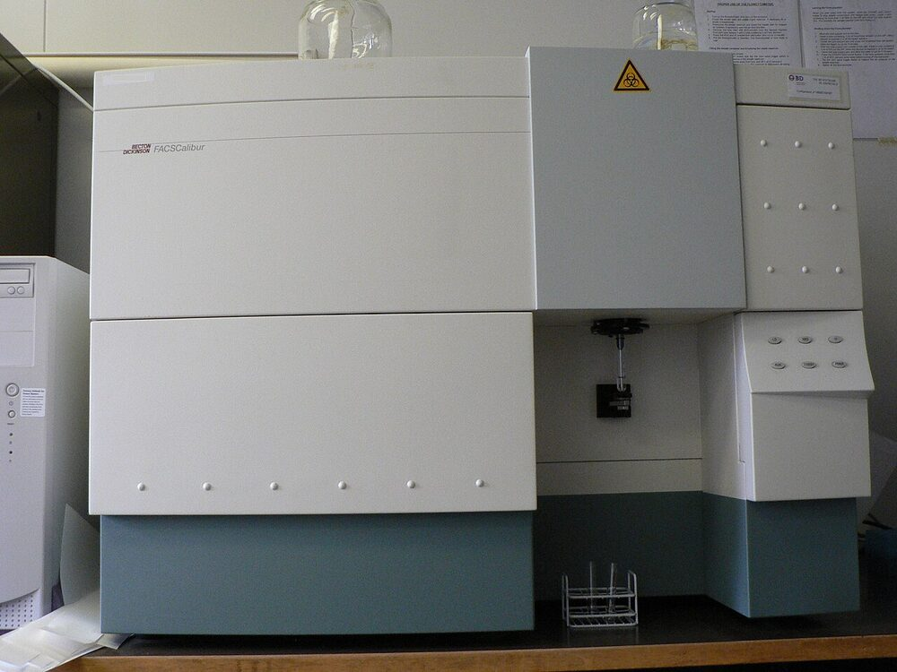
Reading a dot plot: gating
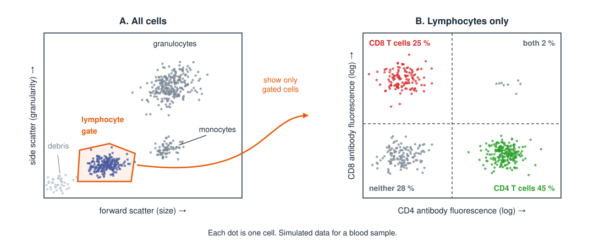
Each dot is one cell. First gate on scatter to keep the cells you want (here lymphocytes) and drop debris.
Then plot two fluorescent markers: four quadrants, four kinds of cell. Report the percentage in each. Try it:the gating game.
Changing cells on purpose: four tools
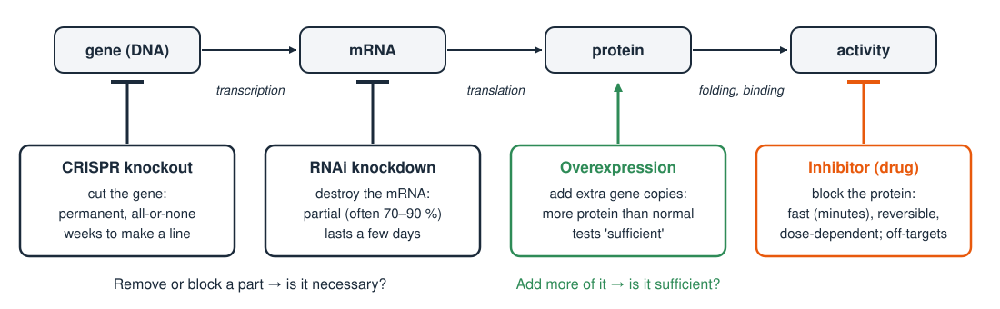
Each tool acts at a different step from gene to activity, and each has its own speed, strength and pitfalls.
CRISPR–Cas9: knocking out a gene
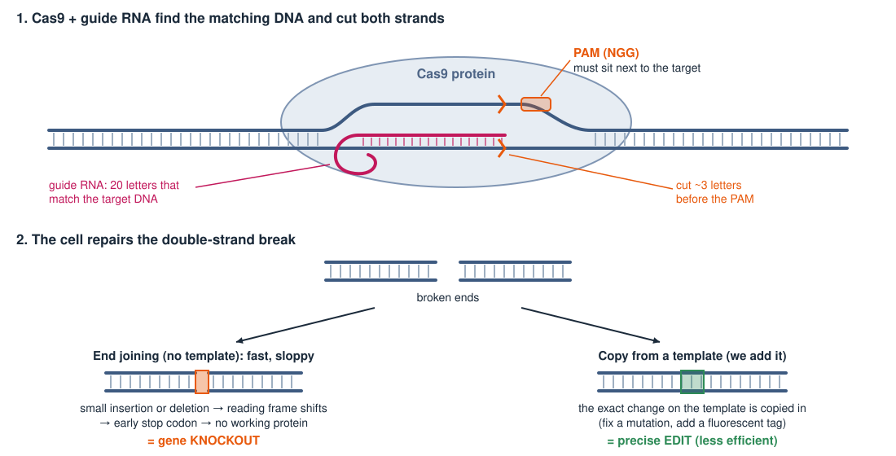
Cas9 cuts DNA where a guide RNA matches. The quick repair often adds or removes a few letters: the reading frame shifts, and no working protein is made.
A bacterial defence against viruses, turned into a tool by Emmanuelle Charpentier (partly at Umeå University) and Jennifer Doudna: Nobel Prize in Chemistry 2020.
How do we know? Necessary, sufficient, and controls
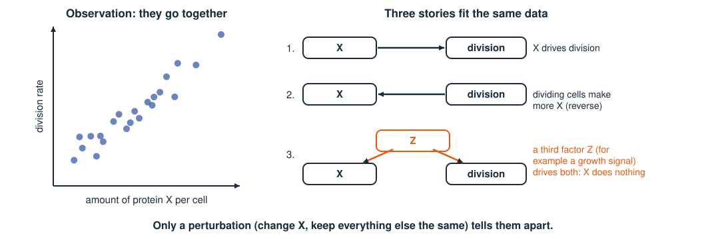
Necessary: remove X → the process stops (knockout, knockdown, inhibitor). Sufficient: add X → the process starts or increases (overexpression).
Controls: a non-targeting guide or RNA; rescue (put back X and the effect disappears); a second, independent tool.
Worked example: is protein X needed for cell division?
Step
Choice
Why
Cells
A human cell line that divides well (e.g. HeLa or RPE1)
Easy to grow, many divisions to measure
Perturbation 1
RNAi against X, and a non-targeting control RNA
Fast; partial loss is fine for a first test
Check
Western blot for X, with a loading control
Did X actually go down?
Readout
Count cells over 4 days; flow cytometry of DNA content (cell-cycle phase)
Do cells divide less? Where do they stop?
Perturbation 2
CRISPR knockout, plus a rescue with X put back
Independent tool; rules out off-targets
Location
Fractionation or immunofluorescence
Where does X act?
Conclusion only if both tools agree and the rescue works.
Single-cell omics: a census of cells
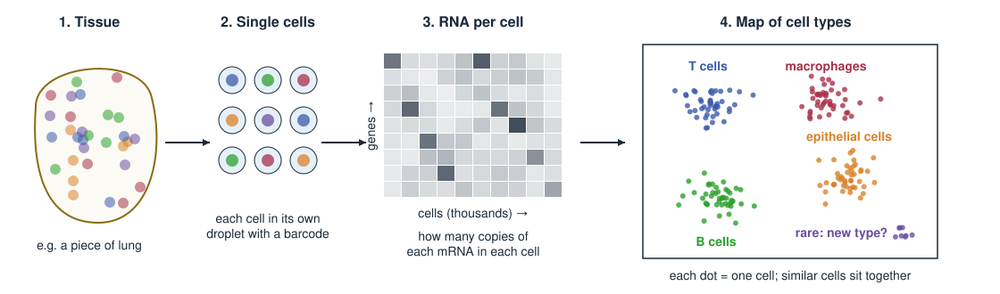
Each cell is put in its own droplet with a barcode; all its mRNAs are sequenced and counted.
Cells with similar mRNA sit together on a map: cell types, and sometimes new ones.
Cell atlases (e.g. the Human Cell Atlas) aim to map every cell type in the body.
Why it matters: finding drugs in cultured cells
High-content screening: thousands of compounds, each in its own well with cultured cells; an automated microscope images every well.
A computer scores each well: did cells stop dividing, die, change shape, move a protein?
Example: monastrol was found in such a screen for compounds that block mitosis. It inhibits the motor protein kinesin-5, which builds the mitotic spindle.
Hits from screens are the first step of drug development, long before animals or patients.
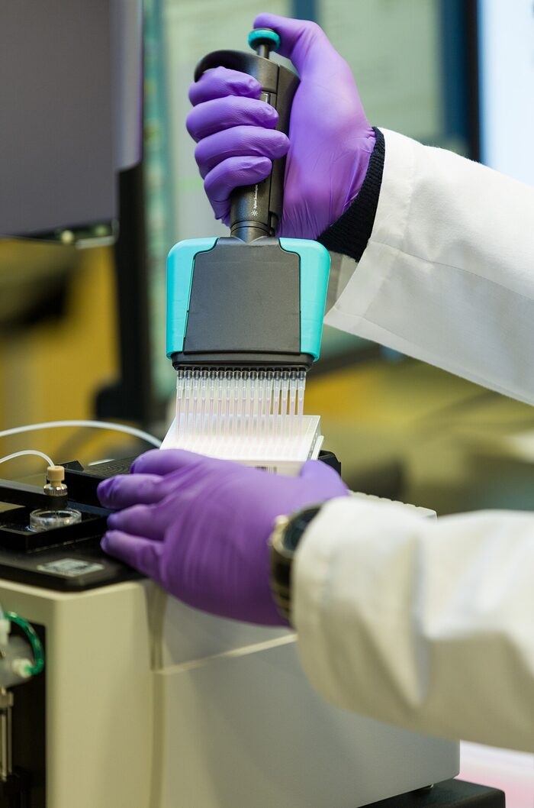
Preparing a 384-well plate for a high-throughput screen.
Why it matters: CAR-T cells, a living drug
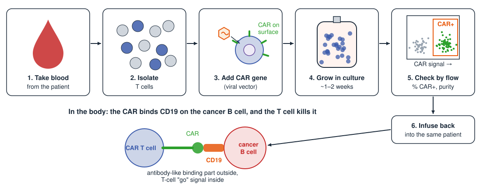
A patient’s own T cells are given a new receptor, a CAR, that recognises a protein on cancer cells (here CD19 on B-cell leukaemia).
Every step uses this lecture: cell culture to grow them, flow cytometry to check them.
Summary
Cell culture gives material to work on: cell lines are easy and reproducible, primary cells and organoids are closer to the body. Check identity and contamination.
Fractionation (differential and density-gradient centrifugation) separates organelles; marker proteins show what is in each fraction.
Antibodies find one protein: western blot (size and amount), immunoprecipitation (partners), immunofluorescence (location).
Flow cytometry measures many single cells; gating picks populations; FACS sorts them.
Perturbations (inhibitor, RNAi, CRISPR, overexpression) test whether a protein is necessary or sufficient; controls and a second tool make the conclusion strong.
Read more (optional): Alberts et al., Molecular Biology of the Cell, 7th ed., ch. 8.